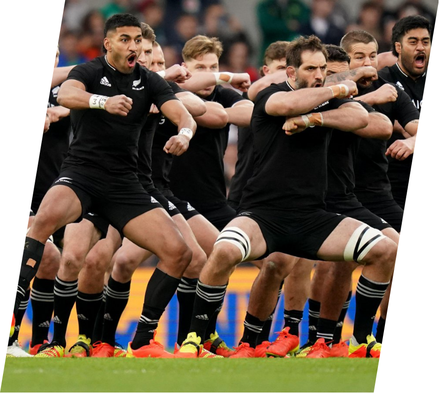

|  | |
The New Zealand national rugby union team, commonly known as the All Blacks, represents New Zealand Rugby in men's national rugby union, which is considered the country's national sport. Famed for their international success, the All Blacks have often been regarded as one of the most successful sports teams in history. The team won the Rugby World Cup in 1987, 2011, and 2015. They were the first country to retain the Rugby World Cup. Since their international debut in 1903, the All Blacks have played test matches against 19 nations, of which 12 have never won a game against the team |